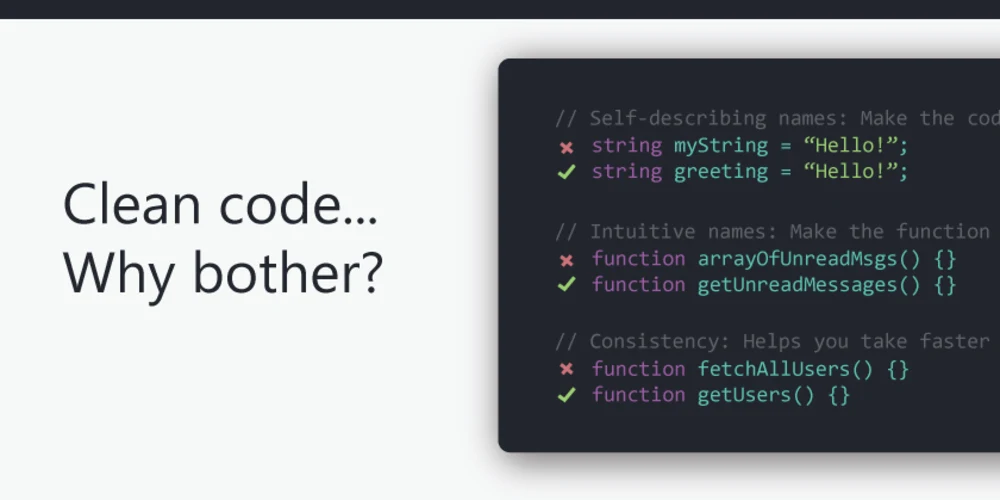

If your code works, then what is the point of ensuring that you have the right amount of spaces and indents in your code in the first place? When I first started coding, I did not realize the importance of coding standards. I found that constantly fixing the amount of spaces that are in your code was very troublesome to fix. However, by following these code standards, I found myself being able to debug my code faster and become an overall better programmer. I think as a programmer, it is important to be familiar with coding standards. This will not only help yourself, but also help other programmers who are reading your code!
In ICS 314 at the University of Hawaii at Manoa, ESLint is used in order to correct any syntax errors, formatting issues, and to overall help you write code that follows the coding standards. When I first started using ESLint, I thought it wasn’t a big drastic change to other check style tools that I used in the past. I found that some errors were more difficult to fix compared to others, however, I think fixing these ESLint errors and getting that green check mark is one of the most satisfying things to see! ESLint is a great tool to use when programming on an IDE. With IntelliJ, you have the option to fix all of your ESLint errors at the same time once you save your file. This feature has to be set up manually through the IDE’s settings. Instead of individually looking at the 10 ESLint errors that you have in your code, you can fix them all at once with one save!
Beginner programmers may view ESLint or coding standards as an irrelevant subject to learn about when trying to become a better programmer. I think many programmers who dislike coding standards are forgetting the fact that they are not the only ones looking at their code! Code is constantly shared with large groups of people in order to complete a project. Without coding standards, you may run into code that looks like this:
for(let i= 0;i<arr.length;i++) {
if(a=== true){
return 1;
}
}
This piece of code may work, however, it’s so hard to read! It is difficult to figure out which curly brace belongs to the for loop or which one belongs to the if statement. The loop’s statements are also squished together making it difficult to read how many times the loop is iterating. If hundreds of lines of code followed the format above, then it will be difficult to debug your code and share it with others for collaboration or help! Although coding standards may be a pain to follow, by constantly implementing these standards into your code everyday, your programming skills will improve drastically.